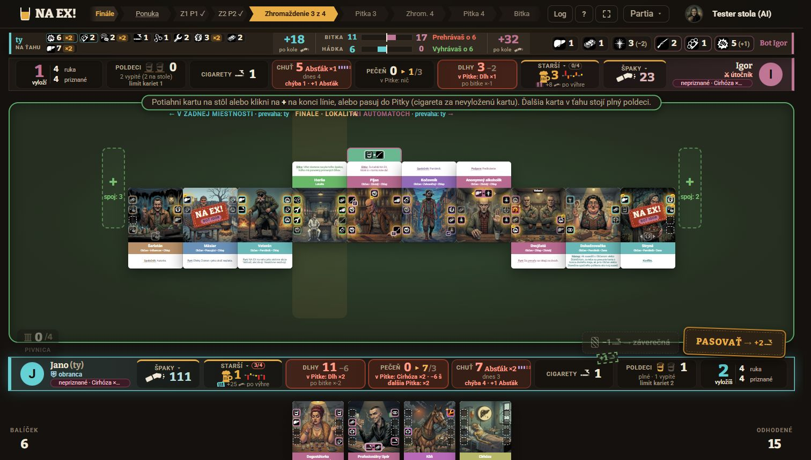
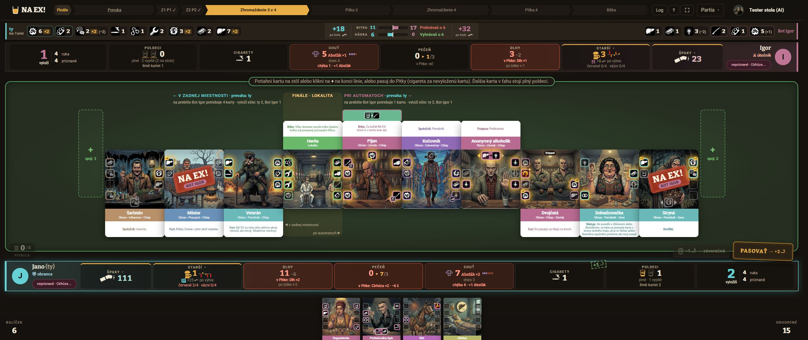

NA EX! · návrh dizajnu stola · 2026-11-11 · podklad: playtest Michala na živom webe
Rozloženie herného stola: väčšie karty, vodorovný posun a duchovia spojov
Verdikt. Karty v línii sa dnes zmenšujú podľa šírky stola, aby sa celá línia vošla bez posunu. Preto má notebook pri 9 kartách karty 102 × 151 px a línia zaberá iba 44 % výšky stola. Navrhujem otočiť pravidlo: veľkosť karty sa odvodí z voľnej výšky stola a čo sa nevojde do šírky, sa posúva vodorovne. Na notebooku sú tak karty o 70 % väčšie. Na veľkom monitore 2560 × 1080 to pomôže menej (+18 %). Tam totiž výšku neberie línia, ale pruhy zdrojov, hlavička a ruka (45 % okna), takže väčší zisk prinesie až variant C.
Odporúčam (na prvom mieste): A, teda výška riadi kartu, s posunom a šípkami, k tomu duchovia G1 (duch na mieste). Ako automatickú poistku pre nízke okná pridať B (skrátená karta), keď by plná karta bola nižšia než 300 px. C (tenké pruhy) nechať na samostatné rozhodnutie, lebo mení jednotnú kostru stola. D (harmonika) je záloha pre prípad, že posúvanie línie nebude Michalovi sedieť.
Všetky mocky sú statické HTML zložené z vystrihnutých kariet súčasného stola (ukážka /hra/ukazka-stola?seed=8&lokalit=7&stop=finale&karty=9&ja=1, 9 kariet + lokalita Herňa). Hlavička, pruhy a ruka sú skutočné snímky, stred stola je mock. Tlačidlo Skutočná veľkosť ukáže obrazovku 1 : 1. Na veľkom monitore tak uvidíš presne, čo by si videl v hre. Posúvanie, šípky, bubliny aj duchovia v mockoch reagujú na myš.
Súčasný stav


SIRKA_V_LINII). Línia síce využíva 68 % výšky stola, ale stôl má len 541 px. Hlavička, pruh súpera, pokyn, pruh hráča a ruka zaberajú 490 px, teda 45 % okna. S reálnou lištou prehliadača (okno ~2560 × 950) sú karty ešte o ~20 % menšie, a to sedí s Michalovým „~200 px“.Audit
| # | Závažnosť | Problém | Dôkaz |
|---|---|---|---|
| 1 | vysoká | Šírka karty v línii sa počíta zo šírky stola: (šírka − 60) / (počet + 2) − 12. Pri 7 až 10 kartách na notebooku vyjde karta 96 až 125 px široká a text efektu sa nedá prečítať. Výška stola sa využije len na 44 %. | HernaPlocha.tsx:890, snímka nb.jpg |
| 2 | vysoká | Súper na MacBooku (Safari, ~1512 × 860) vidí spodok kariet odrezaný pruhom zdrojov. V Chrome sa mi to nezopakovalo, toto je hypotéza: výška karty sa počíta v JS z pevných rezerv v px (PRIDAVOK_NOTEBOOK = 38, REZERVA_RADOV_NOTEBOOK = 92, REZERVA_POSUNU). Iné metriky písma v Safari alebo zalomený nadpis kraja tak spravia líniu vyššiu, než výpočet ráta. Riešenie v spoločnom základe (CSS kontajner) túto triedu chýb odstráni. | HernaPlocha.tsx:303–312, 861 |
| 3 | stredná | Na veľkom monitore je strop karty 198 px šírky a pruhy so zdrojmi zaberajú 45 % výšky okna. Ani na 2560 × 1440 by karta nenarástla. | HernaPlocha.tsx:276, vel.jpg |
| 4 | stredná | Línia sa vie posúvať (overflow-x:auto, prichytenie a vycentrovanie lokality už existujú), ale posun nastúpi až pri karte 96 px. Nie sú šípky ani náznak, koľko kariet je mimo obrazovky. | hra.css:1084–1098, HernaPlocha.tsx:894–900 |
| 5 | stredná | Na notebooku sa nadpisy krajov a lokality zrážajú: „LOKALITAPRI AUTOMATOCH“. Úzka lokalita (102 px) nedá nadpisu miesto. | nb.jpg, y ≈ 212 |
| 6 | nízka | Prejdenie myšou nad kartou v ruke ukáže len lupu. Kde karta vytvorí spoj, sa dá zistiť len opačne, klikom na koniec línie (ruka potom ukáže „2 spoje“). Michal chce smer z ruky na stôl. | HernaPlocha.tsx:1590–1640 (moznostiMiesta) |
| 7 | nízka | „+ spoj: 3“ na konci línie ukazuje číslo bez väzby na konkrétnu kartu. Hráč nevie, ktorá karta z ruky ho dá. | nb.jpg, miesta na kartu |
Spoločný základ všetkých variantov
Výšku karty počíta CSS, nie JS. Riadok línie dostane container-type: size a jeho výška je presne to, čo zvýši po hlavičke, nadpisoch krajov a hrane stola, nech je písmo v prehliadači akékoľvek. Karta potom nemôže pretiecť pod pruh zdrojov, čím odpadá bod 2 auditu:
.stol-plst { display:grid; grid-template-rows: auto 1fr; } /* nadpisy krajov | línia */
.linia { container-type: size; overflow-x: auto; }
.linia .kl { --h: clamp(140px, 100cqh / (1 + var(--posun)), 520px); /* --posun: 0.325 plná, 0.14 skrátená */
height: var(--h); width: calc(var(--h) * 54 / 80); }Línia ostáva nakrivo (karta podľa natočenia hore/dole) a lokalita sa po načítaní vycentruje (to už robí HernaPlocha.tsx:894). Pribudnú šípky ‹ › s počtom skrytých kariet, jemné stmavenie okraja, za ktorým sú ďalšie karty, a tenký jantárový posuvník. Strop 198 px (SIRKA_V_LINII) a výpočet podľa šírky odpadnú. Telefón na šírku ostáva, ako je (línia sa tam nikdy neposúva, SIRKA_NA_SIRKU_MIN).
Výška riadi kartu, línia sa posúva
odporúčamnáročnosť: strednáPlná karta, ktorej výška je odvodená z výšky stola. Široká línia sa posúva vodorovne a po načítaní je lokalita v strede. Šípky ukazujú, koľko kariet je za okrajom. Tlačidlo „Na lokalitu“ sa ukáže, keď lokalitu odsunieš. Na notebooku prejdi myšou nad kartu v ruke: na koncoch línie sa ukážu duchovia (G1). Keď je koniec mimo obrazovky, zasvieti pri okraji „2 spoje →“.
Dotknuté súbory: HernaPlocha.tsx (výpočet sirkaVLinii → CSS premenná, šípky, okraj so spojmi), hra.css (.linia, .stol-plst, posuvník, maska okrajov), zarovnanieLinie.ts bez zmeny. Mobil na šírku: bez zmeny.
Duchovia spojov: dve podoby
náročnosť: stredná (dáta už sú)Pri prejdení myšou nad kartou v ruke sa na oboch koncoch línie ukáže, kde by karta vytvorila spoj: akcia k akcii, hrana k hrane. Dáta na to stôl už počíta pre opačný smer, keď klikneš na koniec línie (moznostiMiesta → NahladVylozenia.pary). Stačí ich zobraziť pre jednu kartu. Keď je kraj prázdny, duch leží hneď pri lokalite. Vyskúšaj karty v ruke: Degustátorka (2 + 2 spoje, vpravo Cirhóza +2), Profesionálny tipér (2 + 1), Kôň (1 spoj, vpravo bez spoja), Cirhóza (nedá sa vyložiť). Na dotykovej obrazovke stačí ťuknúť.
G1 · Duch na mieste odporúčam
G2 · Zvýraznenie hrán + šípka
spojSuseda).Harmonika: konce plné, stred zhustený, bez posunu
náročnosť: strednáVýška karty je rovnaká ako v A, ale nič sa neposúva. Plné ostanú lokalita a dve krajné karty na každom konci, teda tam, kde vznikajú spoje. Karty v strede sa prekryjú ako vejár v ruke. Prejdením myšou sa karta vysunie nad susedov. Na veľkom monitore sa línia vojde celá, takže harmonika sa nezapne a D vyzerá ako A.
Dotknuté súbory: HernaPlocha.tsx (šírka viditeľného pruhu, poradie z-index), hra.css (.harmonika-aktivna v línii už existuje, rozšíriť). Mobil na šírku: dá sa použiť aj tam namiesto zmenšovania pod SIRKA_NA_SIRKU_MIN.
Skrátená karta pri malej výške
náročnosť: strednáako poistka k AKeď by plná karta vyšla nižšia než 300 px, karta v línii stratí biely blok s textom efektu. Ostane ilustrácia s akciami a pás s menom, na ktorom je štítok s kľúčovým slovom („Furt“, „Bitka“, „Spoločník“…). Celý text sa ukáže v bubline pri myši (vyskúšaj prejsť po kartách). Posun nakrivo klesne z 0,325 na 0,14 výšky karty, takže tá istá výška stola unesie o 39 % väčšiu kartu. Na veľkom monitore je karta vyššia ako 300 px a ostáva plná, ako v A.
Dotknuté súbory: HernaKarta.tsx (prop skratena: orez a štítok kľúčového slova), karta/ (kotvy .kl-kotva ostávajú, takže zarovnanieLinie.ts bude fungovať ďalej), Lupa.tsx alebo nová bublina, hra.css. Kontrast: štítok #4a3826 na bielej má 11,4 : 1.
Tenké pruhy zdrojov, viac výšky stolu
náročnosť: veľkávyžaduje rozhodnutiePruh súpera aj tvoj pruh sa zúžia na jeden riadok s číslami a ikonami (34 a 36 px namiesto 60 až 90). Podrobnosti („v Pitke: Dlh ×2 · po bitke ×−2“, „chýba 4 · +1 Abšťák“) sa ukážu prejdením myšou nad čipom (vyskúšaj). Získaná výška ide do stola a karty k tomu rastú ako v A. Je to jediný variant, ktorý výrazne pomôže veľkému monitoru: karta 283 × 420 px namiesto 188 × 279.
Dotknuté súbory: PultHraca.tsx, pult.ts, JednotnyBar.tsx, jbar.css, hra.css (výšky v @media (max-height)), výučba (data-vyucba ciele v pruhoch). Mobil na šírku: pruhy sú tam už zhustené, teda bez zmeny.
Odporúčané poradie
- Spoločný základ + A: výška z CSS kontajnera, posun, šípky, vycentrovaná lokalita. Rieši orezanie v Safari aj malé karty na notebooku. Treba overiť na MacBooku v Safari.
- G1 duchovia nad A, s výzvou „N spojov →“ pri okraji, keď je koniec mimo obrazovky.
- B ako automatický režim pod 300 px výšky karty (nízke notebooky 1366 × 650, zoom 125 % a viac).
- C až po samostatnom rozhodnutí o pruhoch. Ak ti na veľkom monitore A nebude stačiť, toto je ďalší krok.
- D len ak sa posúvanie neosvedčí. A a D sa navzájom vylučujú.
Otázky na Michala
- Posun, alebo harmonika? Pri posune (A) je na notebooku jeden koniec línie mimo obrazovky. Je to v poriadku, alebo majú byť oba konce vždy vidno (D)?
- Duch G1, alebo G2? Mám ich ukázať len pri prejdení myšou, alebo aj počas ťahania karty (tam dnes svieti iba miesto)?
- Skrátená karta (B): stačí v línii štítok s kľúčovým slovom a text v bubline, alebo musí byť text efektu vždy na karte?
- Pruhy zdrojov (C): smie sa pri čísle skryť vysvetlivka („v Pitke: …“) do bubliny? Ak áno, pripravím samostatný mock pruhov.
- Ktoré okno má tvoj veľký monitor naozaj (s lištou prehliadača)? Podľa toho doladím prah 300 px a strop výšky karty.